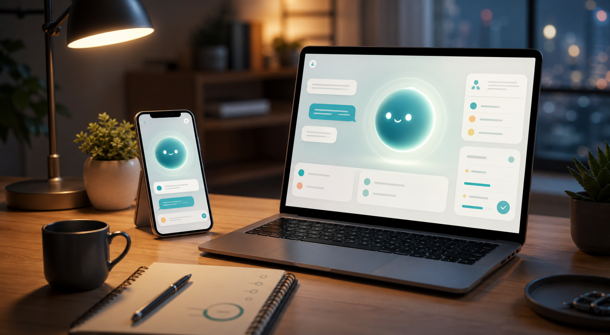

Старт
Привет. Я Рэй.
Войди, чтобы память была общей. Можно продолжить и без входа.
Аккаунт
Гость
Старт
Войди, чтобы память была общей. Можно продолжить и без входа.
Гость
Как пользоваться
Чат: вопрос, мысль, цель, просьба или короткое “помоги понять”.
Память: “Запомни: ...” сохраняется как важный факт.
Telegram: после связки бот читает ту же память.
Голос: работает через разрешение микрофона там, где браузер поддерживает распознавание.
Задачи
Разрешения
Рэй не читает экран, файлы и другие приложения сам. Он видит только то, что ты отправляешь или разрешаешь позже отдельному desktop companion.
Ray ecosystem
Один помощник, одна память
AI-компаньон
Это не просто Telegram-бот. Рэй — один персональный помощник: сайт, установленное web-приложение, Telegram и общая память между ними.
Что такое Рэй
Рэй отвечает коротко, запоминает важное, помогает с учёбой, целями, мыслями и бытовыми решениями. Он не заменяет человека, а держит контекст рядом, чтобы не начинать каждый разговор с нуля.
Можно писать неидеально: мыслью, голосом, коротко, с ошибками. Рэй должен понимать смысл, а не требовать красивый промпт.
Разбирает темы, задаёт вопросы, проверяет понимание и помогает собрать план обучения.
Большую цель превращает в маленькие шаги: сегодня, неделя, прогресс, что мешает и что делать дальше.
Память
Если написать “Запомни: ...”, Рэй сохраняет это как важную заметку. После связки Telegram-бот и web-чат смотрят в один профиль.
Google или email + пароль создают web-аккаунт.
Сайт показывает код, человек отправляет его боту.
Факты и контекст доступны и на сайте, и в Telegram.
Следующий backend-шаг: после кода Telegram сможет становиться полноценным способом авторизации.
Скачать Рэя
На телефоне Рэй открывается как отдельная иконка через PWA. На Windows можно поставить ярлык Ray Web и отдельную плавающую кнопку companion.
Открой сайт в Safari → “Поделиться” → “На экран Домой”.
Открой сайт в Chrome → меню браузера → “Установить приложение”.
Создаёт красивый ярлык Ray Web на рабочем столе и в меню Пуск.
Плавающая кнопка Рэя. Новый установщик уже знает Railway API.
Экосистема
Сайт — главный кабинет. Telegram — быстрый вход в разговор. Установленное web-приложение — иконка на телефоне или ноуте. WhatsApp, Instagram и native mobile идут после стабильного ядра.
Что осталось
Красивый сайт помогает показать идею. Но покупать будут только тогда, когда память, голос, фото, установка и вход работают предсказуемо.
Доделать вход через код так, чтобы Telegram мог быть не только связкой, но и полноценной авторизацией.
Сделать backend-распознавание аудио, чтобы сайт и companion не зависели от капризов браузера.
Подключить vision-модель и вернуть анализ изображений без лишних кнопок.
Добавить настоящую страницу целей: шаги, прогресс, мягкие напоминания.
Отдельно довести плавающую кнопку: цвет, голос, быстрый чат, удаление и разрешения.
Контакты
Сайт показывает продуктовую оболочку, Telegram даёт быстрый живой тест, а GitHub хранит код проекта.
Цвет можно менять. Двигается только внутри сайта.
Скачать Рэя
Проверяю, доступна ли установка в этом браузере.
iPhone: Safari → Поделиться → На экран Домой.
Android: Chrome → меню → Установить приложение.
Windows App: обычный ярлык Ray Web.
Windows Companion: плавающая кнопка Рэя, отдельная beta-часть.
App Store / Google Play: скоро, после стабильной web-версии.